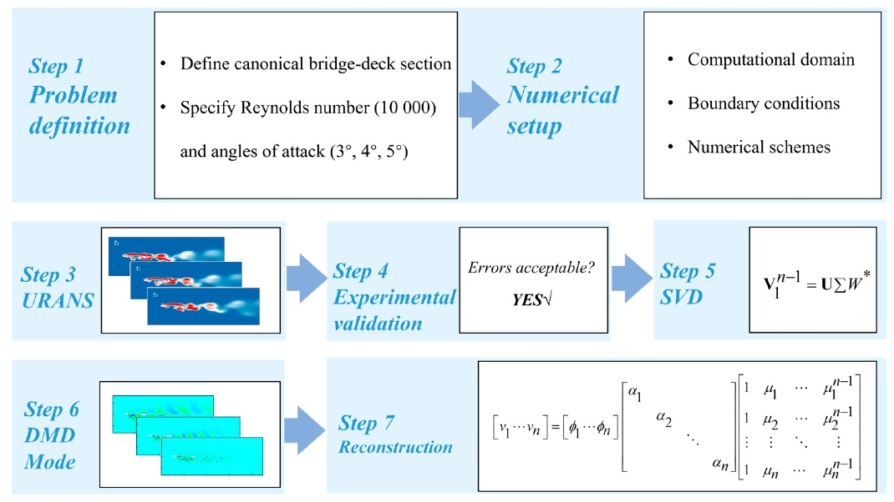

{kind=link}

Effects of angle of attack and feature-preserving reduced-order models for canonical bridge deck wakes
Applied Sciences, 15(23):12670, 2025.
abstract
Increasingly slender bridge decks are prone to wind-induced damage, where the complex interactions between the incoming wind, deck, and adjacent wake flows play a deciding role. However, the unsteady wake dynamics at small but realistic angles of attack and their compact reduced-order representation remain insufficiently understood. The unsteady wakes subject to angle of attack from 3° to 5° are investigated via Koopman analysis with the Dynamic Mode Decomposition (DMD), aiming to construct accurate reduced-order models for largely repeated canonical cases, while preserving physical and phenomenological fidelity. Instantaneous velocity and vorticity fields reveal a clear separation-reattachment cycle: leading edge separation bubbles form and migrate upstream at drag peaks, then collapse and reattach at drag valleys. Shear layers roll up into dual vortices that pair, merge with Kelvin–Helmholtz-type shear-layer instabilities, and alternately shed from the deck’s upper and lower surfaces, driving oscillatory wake deflection and attendant drag and lift fluctuations. DMD identifies four dominant modes that together account for over 90% of the turbulent kinetic energy: time averaged base flow, the fundamental vortex shedding mode, and two higher frequency shear-layer modes. Adequate truncation reduces data dimensionality by an order of magnitude while keeping the normalized error below 6%. The results demonstrate that a DMD-based reduced-order model built on Unsteady Reynolds Averaged Navier–Stokes (URANS) data can faithfully preserve both large-scale separation topology and fine-scale vortical structures across small angles of attack, providing a compact and accurate representation of bridge-deck wakes for repeated canonical configurations.
bibtex
@article{liuj5,
title = {Effects of angle of attack and feature-preserving reduced-order models for canonical bridge deck wakes},
author = {Shijie Liu and Yuexin Cao and Zejun Qin and Jian Zhao and Luming An and Peng Guo and Zhen Zhang and Qingkuan Liu},
journal = {Applied Sciences},
volume = {15},
number = {23},
pages = {12670},
year = {2025},
doi = {10.3390/app152312670},
url = {https://shijieliu.com/data/J5-applsci-15-12670-v4.pdf}
}